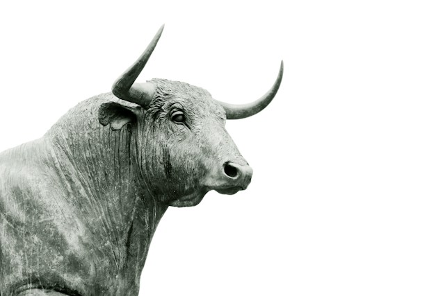
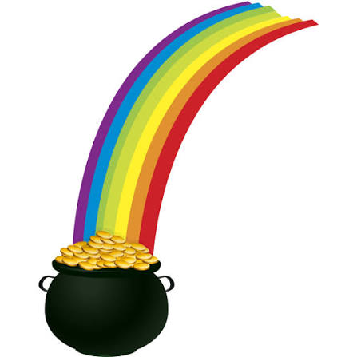
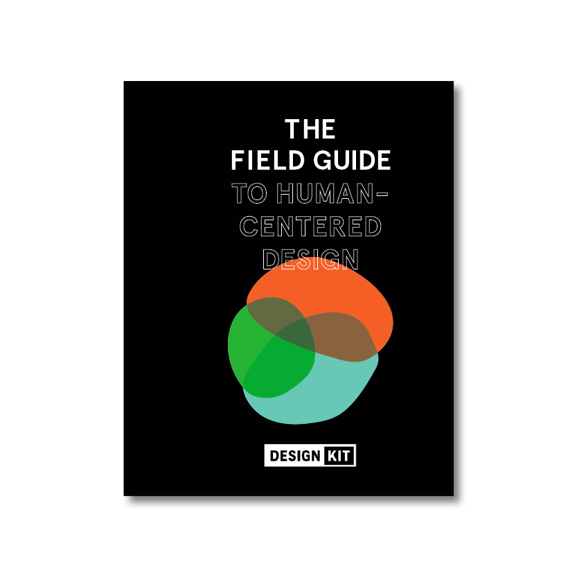
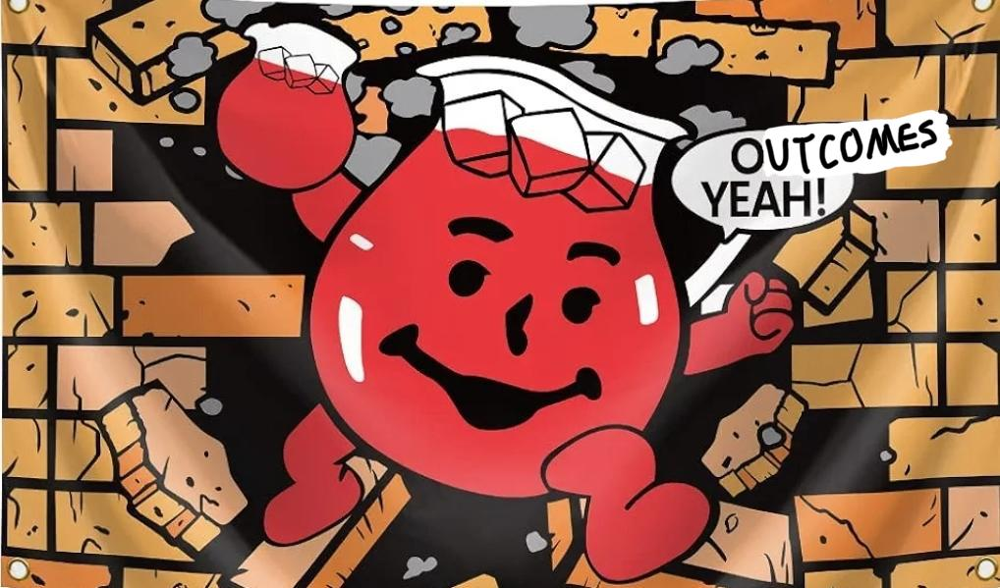
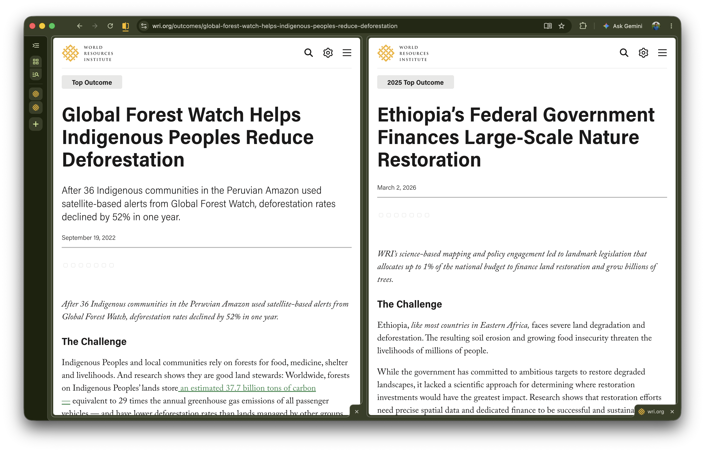
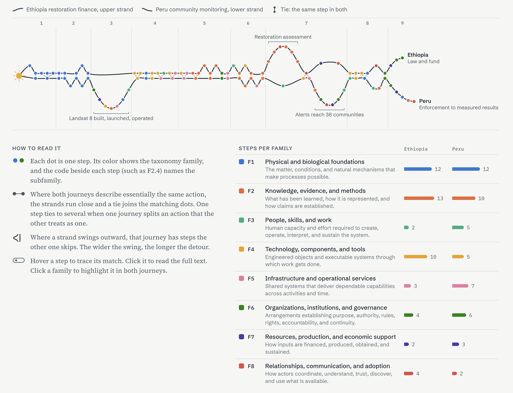
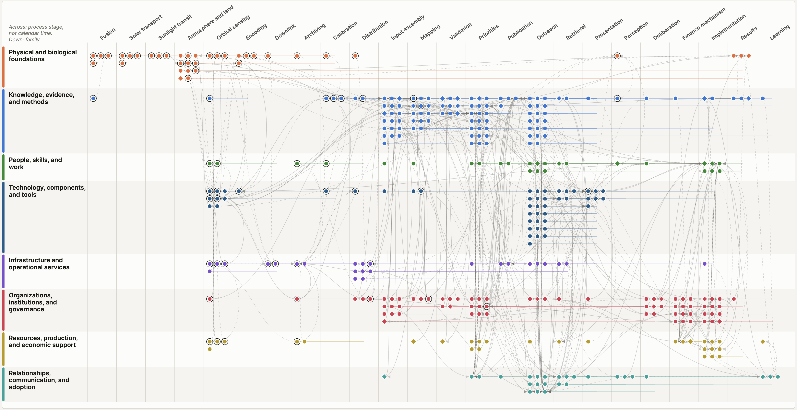
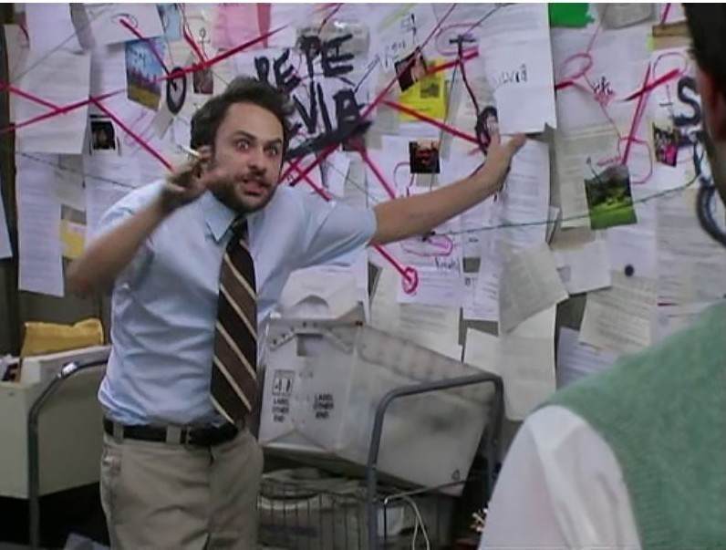
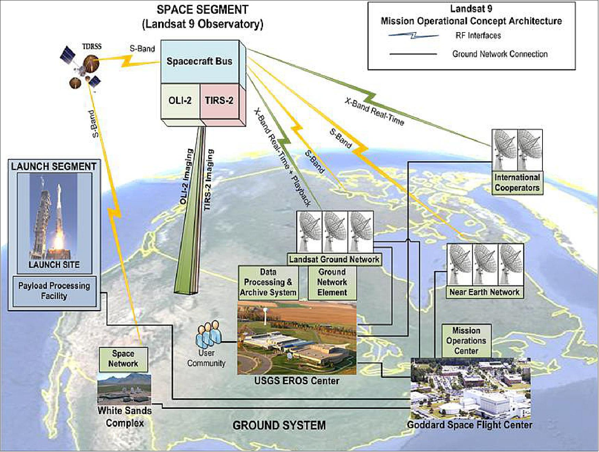
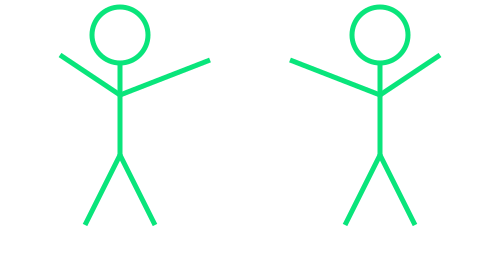

SatCamp Lightning Talk
Last miles in geo



At WRI, our last mile is outcomes

Outcomes require
Relevance Is the intervention doing the right thing?
Effectiveness and scale Is the intervention achieving its objectives?
Contribution and collaboration What role did the work play in the outcome?
Example
Alerts in Loreto, Peru & a restoration program in Ethiopia

Loreto, Peru
36 Indigenous communities used Global Forest Watch alerts. Deforestation fell 52% in one year.
Ethiopia
Science-based restoration mapping led to a law that puts up to 1% of the national budget toward land restoration.
Contribution details
Our involvement may be considered a contribution if:
A vast universe of contributors!
We need a reasonable assessment boundary.
Start at the Sun
0 years
(10k–170k)
for energy from fusion in the core to random‑walk its way to the surface
8 min 20 s · 93 million miles
Everything else is the last mile.
Feed the robot some context, answer some questions…
One sequence per outcome, and how they sync up

Dig deeper: find the dependencies, lean into the taxonomy
A web of dependencies


It’s all connected, man.

From orbit to catalog, again and again.
In each of these steps:
a universe
a history
an ecosystem
… load-bearing
Downstream is so load-bearing too
Thanks for contributing.
Wishing you all the best on your last mile.

satcamp.xyz